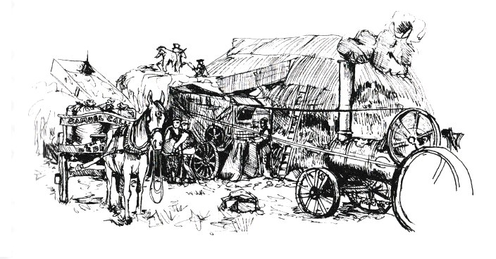

SOULDERN PARK
As a small boy of five or six years, to be allowed to go down to Souldern Park with the Big Boys was a treat: Also an endurance test – the boys were two, three and four years older than me, my brother included. We all walked miles, climbed fences and trees and scaled six foot walls. We also jumped ditches and streams all at a boy’s exciting pace.
“Look at this.”
“What you got?”
Scrambling, scampering, all eager to seek and find. What days they were!
The skeleton of a deer trapped in a wire fence; a dead owl tied to a tree branch by one wing by the gamekeeper – to protect the young partridges – All blowing in the breeze. Young rabbits, dozens of them everywhere, and birds. Those spring mornings, the smell of the wood, the trees, moss, damp soil, the vision of woodland flowers. A glade of bluebells, primroses, and then to see the first violets that hid and had to be found. Not the primrose, that always seemed to peep out of all sides, making a yellow carpet: Down in that carpet was the shrinking violet.
An old thorn bush, entwined branches, covered in white flowers looking up at the tall trees. The blue sky with scudding white clouds. The ground now carpeted with moss, or wood anemones, looking like white elves dancing. The fallen trees – to walk from trunk to tip to search in it for birds’ nests, squirrel dreys or whatever. The blackbirds, scolding us – for they were being disturbed. The gentle breeze always in the trees. The gentle “tick, tick” of a little wren as it flew in and out of the bush, never very far, always in contact as if it must show you through his domain with no sign of fear. This tiny bird kept pace with us eight or nine boys.
Dead twigs snap, last years leaves line our path and rustle as we walk. A rabbit suddenly appears before us, lopes lazily and quietly away. Another blackbird flew out of a bush scolding, grumbling and much fussing pretence.
It came – a shower of rain, so light, descending more like a mist as you looked around. You looked into a green brown mist, through which the big tree trunks loomed up to the sky. The raindrops seemed to dance from leaf to leaf. The murmur of the trees and the swish of the rain so blended in with themselves. The tiny wren still kept pace with us, moving with darting flights, fearless and so small, past its surroundings.
We followed a track that lead where? Apparently to nowhere. In an aimless irresponsible fashion and, like all boys, we were following it without any plan or purpose. A cuckoo was calling near at hand. The mellow notes seemed to lure us on and on. It was in that direction we were walking towards the sound, if any definite way. Not that it mattered, that exquisite spring morning. The trees and the bushes beneath them were coming into leafy bud, small crumpled leaves of the daintiest green. Here and there a silver birch was adorning itself with a fine tracery of green. In contrast the ivy, dark green in colour, clinging to the big firs so rich in contrast to the brown dead leaves underfoot.
The rain stopped and the sun slanted through the trees. Suddenly the wood was transformed, the trees awoke in many colours to perfect vivid life. Straight away a gorse bush was transformed into a pyre of blazing yellow flame. It was as if fairies were changing the wood into fairyland. They caressed a thorn tree, which was bursting into flower and made it a thing of white beauty. They touched the primroses that peeped from every side in soft colour. They opened out the hiding places of the shy sweet violets.
Then with the sun, they danced away, almost with abruptness, they were gone. The wood seemed to shiver as the dark grey clouds swiftly scurried ahead. The sun hid its face.
Far away I heard the patter of rain. As it came towards us, we felt the cool freshness on our faces. I was thankful, for we had been travelling for an hour, non stop, up and over, and through all and everything. Not for anything would I admit that the pace was too fast for my little legs to go. We crouched under a dead, uprooted beech tree that lodged half down another tree, forming a bridge which we had to explore.
When the rain ceased a few minutes after, the sun shone through and fairyland was again dressed in all its glory. As I left our shelter, I looked back at the half fallen tree, it was like a warrior king fallen in battle supported by his worthy knight, as he was falling mortally wounded. How many battles had he fought and won? But the last was too much. He would not survive, that fallen tree. Hundreds of gales had blown and torn at his limbs and branches but now it was finished, it was a truly dying King.
On we went until we came to the Park wall: Six feet of it. To me it could have been a house or a church steeple, it looked so high, but following the others I hoped for a way up and over, We walked alongside for a hundred yards and here was a branch leaning by the wall which we could shin up and over. So over they went.
“Go back, Little’un!” were their parting words as they dropped over the other side.
Go back – Me? Not ever – I was half way up the wаll, I would show them!
Three quarters of the way up, it was a drag – I didn’t know my bum was so heavy – hanging back down, it was twice as heavy as the rest of me. Taking a fresh hold, sticking my toes in the wall then telling my backside to come on up and not hang back, there I gave a last determined effort and was up on top of that six foot high wall: the rest was easy – all that goes up must come down. Hanging on with tooth and nail, I slithered down without looking at the ground beneath. ‘The bigger they are the harder they fall’, thought I. ‘As I am a little one, I shall make it’ – I hit the ground feet first.
My first thoughts were “Where are the others?” Rubbing my hands down my shorts, a quick look at my grazed knee then I turned and ran towards the boys who I could hear talking down Mill Lane, out of sight. I sprinted around the bend in time to see them climb over the stile and take off across the Station Fields. At the next stile, I caught up with the boys, as they were stood deciding which way to go to. It was decided to make for the trout stream where it flowed into the canal by the drawbridge. (We saw birds nesting as we went).
Making our way across the fields, we saw a moolyhern (heron) by the canal bank feeding a young baby heron. We watched as the chick ate and then ran to see it. As we came close, we could see it was all stomach and penfeathers – about a foot long. We guessed it was twelve to fourteen days old.
From the time it is hatched, the baby heron eats large and continuous amounts of food. It was an education to watch it consume frogs and fish as fast as the parents could provide it. Its great gaping mouth opened and down it went into that big stomach, filling it right up to its neck. If the parent bird stops for a minute, the chick squawks loudly for food. The bird is crammed with so much food, that they grow so fast that the change can be seen happening – the penfeathers change to real feathers in seven weeks. At nine weeks old, the bird was three feet tall. Flying short clumsy flight from tree to tree. He flapped his great wings at us when we got too near and, still awkward with his long legs, he waded out to the canal and now he was feeding himself.
From the start of his life he was not strong or able to defend himself or scurry away. He squawked and used his beak and put on a bold front then stretching up to his twelve inches, he would fall over. We teased him by taking some of his food that was spilled over on the bank and dangled it in front of him. He would stand on his wobbly legs and would implore you with such woeful cries to “Feed a poor suffering baby bird."
Nature is a wonderful thing; we marvelled at the food in the extended body (undigested), not that the parents had time to do anything, the chicks lusty appetite kept them so busy. At nine weeks they left him. We watched for hours.
The heron is one of the earliest nesting birds hereabout and they have, by the middle of March mated, built or rebuilt their nest, often returning to the same tree. Older people told us that fifty years ago (1870–80) there was a heronry where the blue heron came every February like the rooks to the rookery, to mate and breed, but in my youth only odd couples were to be seen in this nest. A very shallow one, in a dead fir tree – near the top, which had been blown down, chick and all, to the ground. Some of the nest was halfway down, caught in the lower branches which also, no doubt, cushioned the fall of the chick to the ground. There may have been more than one, the heron lays three eggs and sometimes a clutch of four lovely sky-blue and really beautiful, unspotted in a big structure of twigs and branches of mostly birch on the remaining structure of the old nest.
The heron flies a long way to find the best fishing, where he loves to stand in the shallow, hours at a stretch, jabbing his sword-like beak in lightening flashes. The fish don’t stand a chance. The call of the blue heron is a harsh “crank, crank,” but when it comes to nesting they do a “clickety, clickety, click.” It sounds as if their long beaks are clamping together.
These slow flying birds, taking a trip to their favourite fishing ground and back, were a very familiar sight alongside the canal and streams hereabout.
